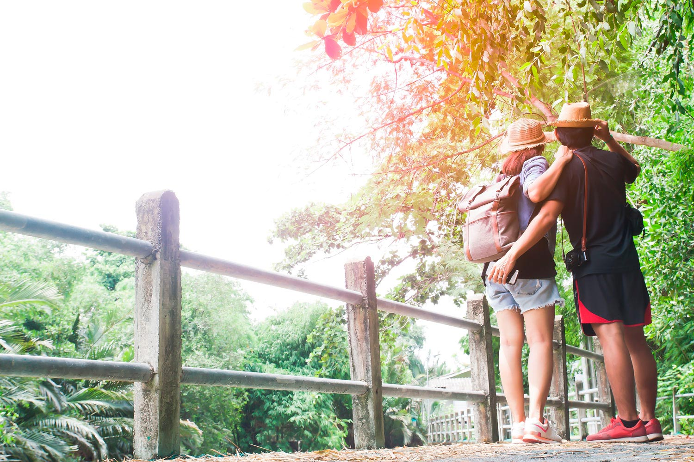
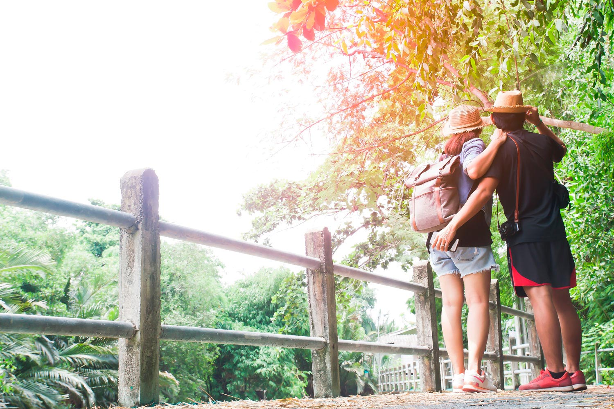

агенство интересных маршрутов
-Туры-
Выберете тур
Экскурсия-квест в комплексе Москва-сити
Сначала вам предложат погулять по “острову из стекла и бетона”, полюбоваться на стеклянные здания снизу, узнать историю комплекса и особенности каждой из башен. Затем на лифте, который движется со скоростью 7м/с, вы попадёте на смотровую площадку на высоту 230 метров. В Москве ей нет аналогов. С такой высоты как на ладони видны объекты Москва-Сити на самых разных этапах строительства. Воспользовавшись этой ситуацией экскурсовод расскажет о том, из чего состоит небоскреб, как обеспечивается его устойчивость, безопасность. Вопросы: как поднимается бетон, какой длины сваи, и как доставляется вода на высоту более 300 метров, также не останутся без ответа.
Затем неожиданно поступит сообщение о том, что где-то в Москва-Сити заложено взрывное устройство. На поиски источника опасности будут направлены экскурсанты, которые уже прекрасно знают комплекс и должны справиться с этой нелегкой задачей.
2 часа - 2300 руб.
Забронировать
Легенды Сталинских высоток
Семь сталинских высоток — это визитная карточка Москвы, одни из самых красивых и уникальных зданий Европы. Но говорят, что целью авторов проекта во главе с самим Сталиным было не только продемонстрировать миру силу и могущество Советской державы, но и заложить в архитектуру столицы некую сакральную идею — пояс астероидов или восьмиконечную масонскую звезду. Центром её стал бы легендарный Дворец Советов, построенный на месте Старого Храма Христа. Фундаменты всех девяти высоток заложены в один день. Почти все они строились вдоль Садового кольца, как бы обрамляя исторический центр столицы. В 1950 г. Сталин отдал приказ — каждую из башен должен венчать шпиль со звездой. И эти шпили, как и сами звезды, тоже имели свой магический смысл.
3 часа - 2900 руб.
Забронировать
По следам Мастера и Маргариты
"Однажды весною, в час небывало жаркого заката, в Москве, на Патриарших прудах... ". Так начинается один из самых значительных и известных романов XX века. Москва является в нём одним из действующих героев, ведь Воланд прибывает не только ради изучения "недавно найденных рукописей чернокнижника в государственной библиотеке", но и чтобы посмотреть, как изменился город. Мы увидим большинство мест, в которых происходят описанные в романе события: от "Нехорошей квартиры" (Большая Садовая, 302-бис, пятый этаж, кв. № 50), где жил сам М.А.Булгаков и куда он "поселил" Воланда со свитой через Патриаршие пруды и один из возможных особняков Маргариты мы пройдём к Моссолиту — литературному институту им. М.Горького и пройдёмся по переулку, где Мастер встретился с Маргаритой, а сам Михаил Афанасьевич со своей женой. Возможен вариант 4-5 часовой экскурсии, где мы также проследим за полётом Маргариты на метле, узнаем о том, как Н.В.Гоголь "укрыл своей чугунной шинелью" М.А.Булгакова и закончим маршрут у подвала Мастера.
1,5 часа - 1900 руб.
Забронировать
Легенды московского метро
Построенная в 30-е годы система московского метрополитена была частью грандиозного замысла по переустройству столицы. Маршрут экскурсии пройдет по трассе первых линий метрополитена, в основном — по самой известной — Сокольнической. Ее открытие в 1935 году было воспринято как один из триумфов коммунизма. Строительство этой ветки стоило Москве невосполнимых потерь — ведь прошла она по старинным московским храмам.
Начнётся экскурсия возле станции метро «Кропоткинская», которой предстояло стать подземным этажом грандиозного Дворца Советов, который планировалось создать на месте храма Христа Спасителя. Маршрут экскурсии включает осмотр ст. м. «Кропоткинская», «Библиотека им Ленина», «Лубянка» с выходом на площадь, «Арбатская», «Охотный ряд», «Новокузнецкая». Экскурсия завершается на ст.м. «Площадь революции», знаменитой своими бронзовыми скульптурами. О том, какую тайну они хранят и по сей день, вы узнаете из рассказа экскурсовода.
1 час - 1500 руб.
Забронировать